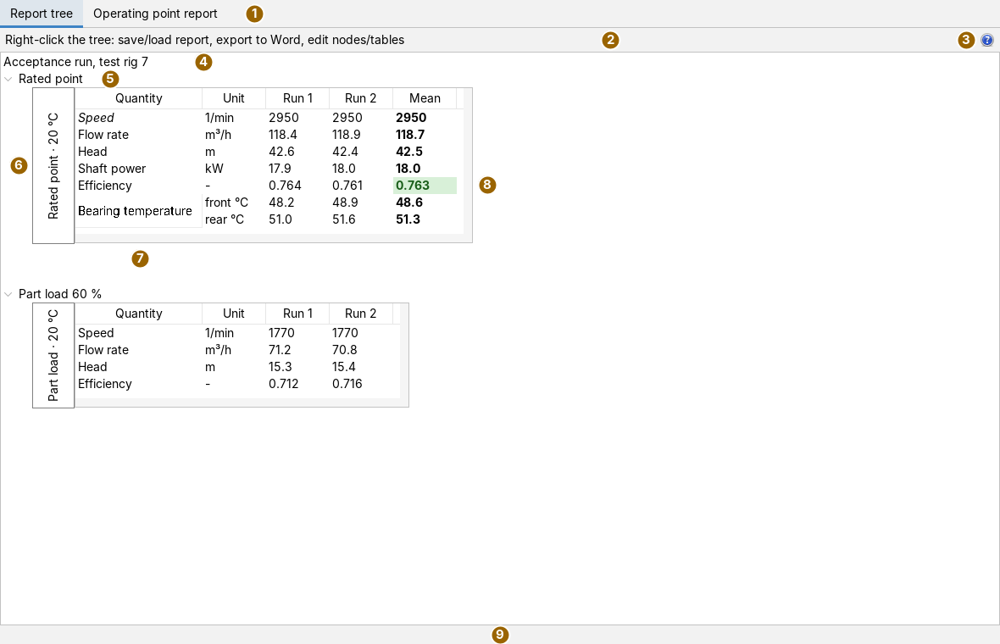
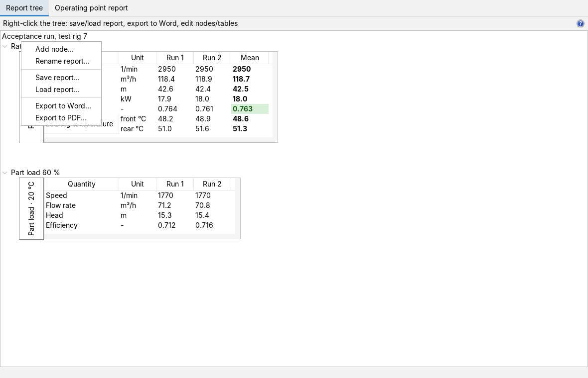
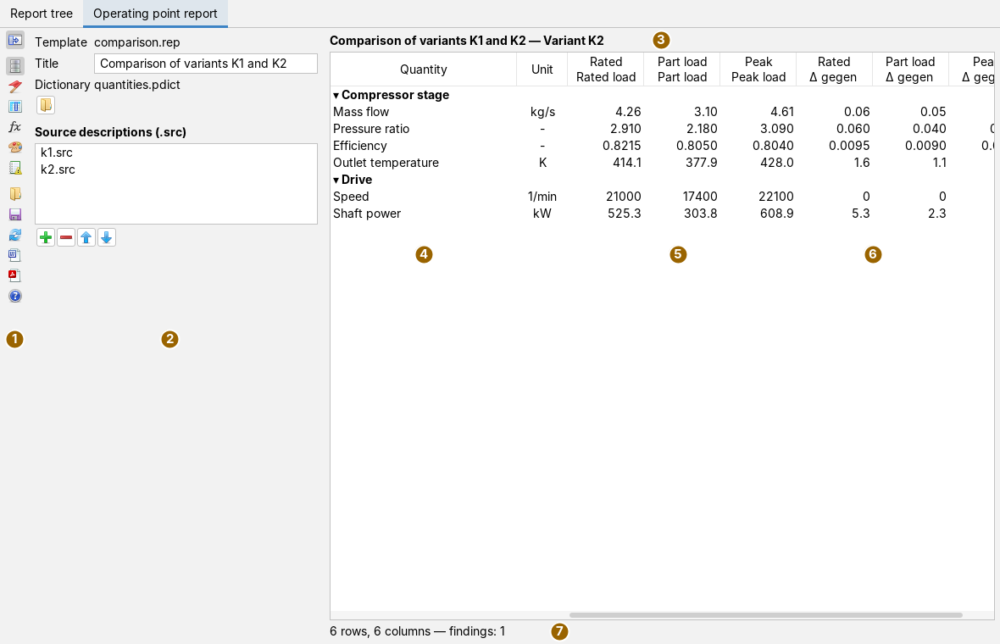
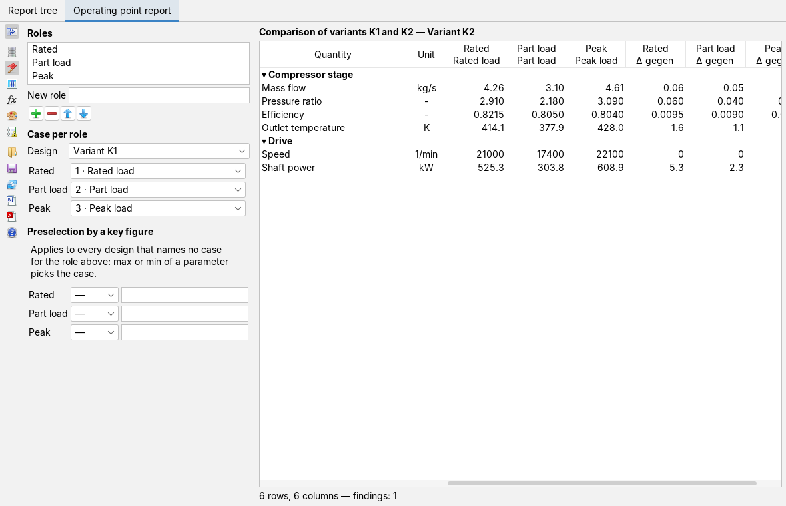
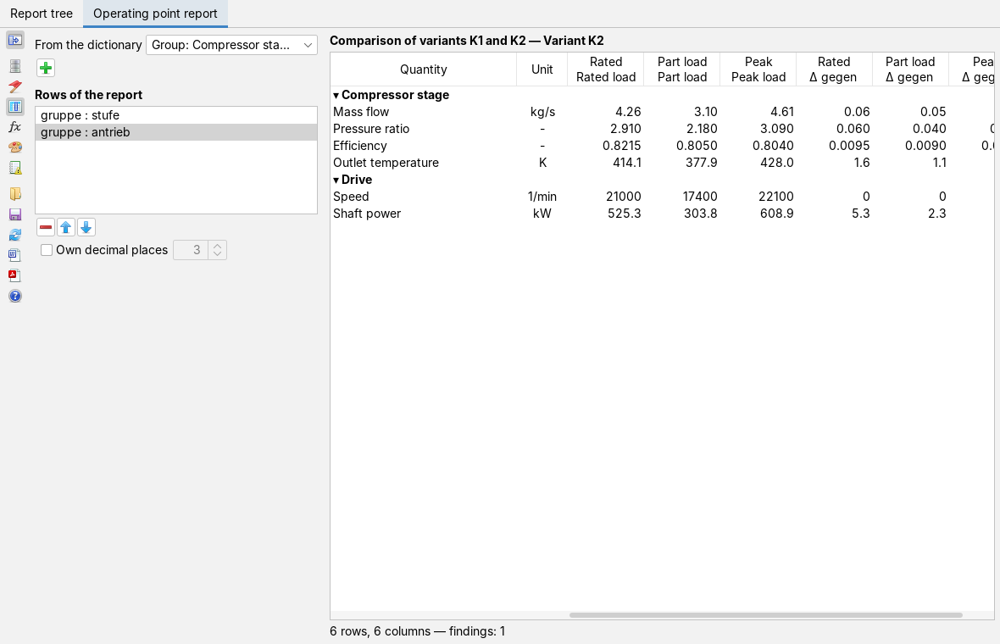
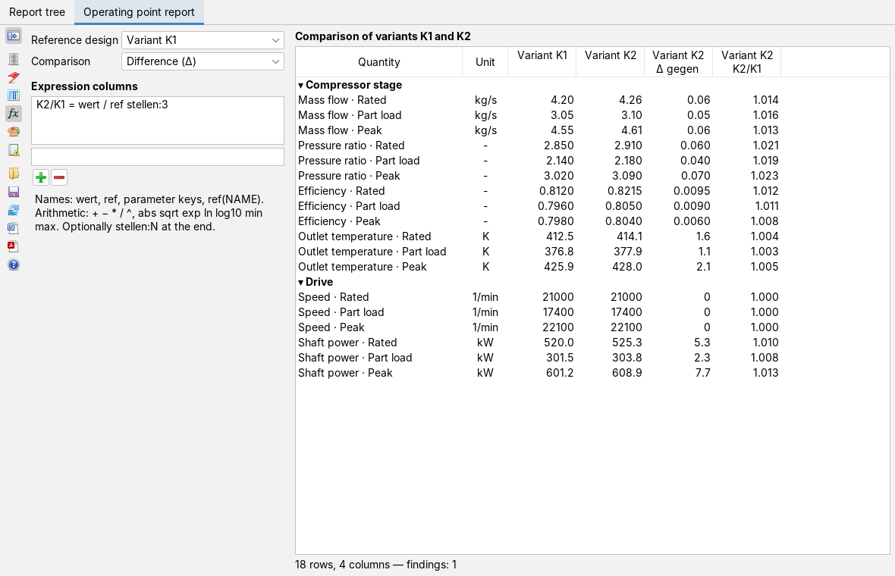
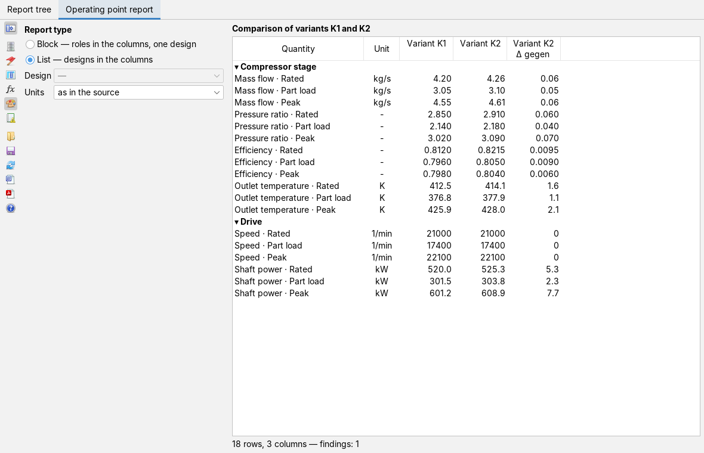
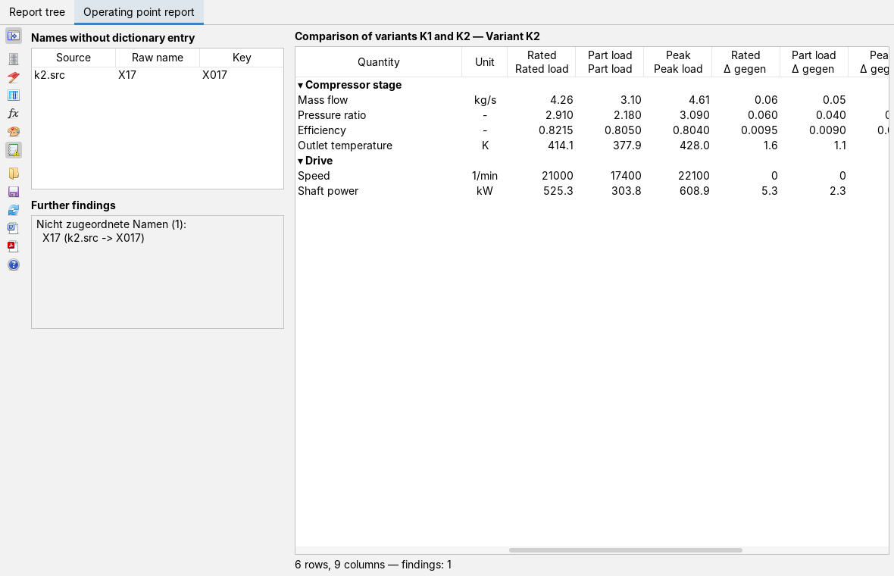

Building reports and writing them as Word or PDF
User page, as of 7 October 2026. How to build a report from nodes and tables in the Report tree tab, format cells and write the result as a Word document or PDF, and how to assemble a comparison of operating points in the Operating point report tab from a template, a parameter dictionary and result files. The pictures are screenshots of the app with freely invented data: an acceptance run on a test rig and two designs of a compressor stage.
The window
The app is opened from the Apps menu with New Report or with Alt+R. It has two tabs: Report tree for reports whose values you type in yourself, and Operating point report for reports built from calculation results. On opening, the report tree holds a small starter template with one node.

A report is a tree: the root carries the title, named nodes hang below it, and each node carries exactly one table. A click on the triangle in front of a node folds its table in or out. The tables are not pictures but live: click into them and type.
Bar and help
Apart from the hint text, the Report tree tab has only one button; everything else lives in the context menus (right mouse button). The bar of the operating point report is described further down.
| Icon | Tooltip | What happens |
|---|---|---|
 | Help: opens the docs for this app (like F1) | Brings the docs app to the front and shows this page. The status line says so; if the docs app is not in the launcher, it gives the address of the docs on the web. |
Building a report

A right-click on the root or on the free area opens the menu of the whole report:
- Add node… asks for a name and appends a node. Its table has one empty row and one value column A.
- Rename report… changes the title in the root.
- Save report… and Load report… write and read the report file (XML, see What is saved). If the extension is missing on saving,
.xmlis appended. - Export to Word… and Export to PDF… see Output.
A right-click on the name of a node opens its menu: Rename…, Remove (with a confirmation), Up and Down move it among its siblings. The order in the tree is the order in the document.
Editing tables
Each table consists of the vertical descriptor on the left, the Quantity and Unit columns and any number of value columns. The table shows headings above the columns only if that is switched on in its settings.
- Entering values and row names: click into the cell and type, as in any table. Quantity and unit can be changed the same way; the change goes into the structure of the report.
- Right-click in the values: Add column (the new column is named after the next letter), Add row and Format cell….
- Right-click on quantity or unit: Format cell…. In a merged group, the format of the first row applies to the whole group.
- Right-click on the descriptor: Edit settings opens the structure of the table.
Format cell sets Bold, Italic, Text colour and Background; Choose… opens the colour chooser, Default removes the colour, a preview shows the result. In the picture above, the Mean column is bold, the efficiency has a green background and the quantity Speed is italic.
The structure (Table configuration) contains the Descriptor:, the Show column headers box, the list of Rows with quantity, unit and the merge ▲ box, and the list of Value columns with their labels. Each list has buttons to add, remove and move entries. merge ▲ joins the quantity of a row with the row above; that is how the group Bearing temperature with the units front °C and rear °C is made. The first row cannot merge. Save XML… and Load XML… store the structure of a single table as a file of its own and fetch it back, for instance as a template for other nodes. OK applies the structure; values already entered stay where they are as long as their rows and columns remain.
The operating point report
The second tab does not build a report from typed values but from result files. It needs three things, described by the report core module reporttable: a parameter dictionary (.pdict) with the names, groups, units and decimal places of the quantities, one source description (.src) per design that points to the file with the operating points, and a template (.rep) that says which cases go into the report as which role and which rows it has.

The example data in the picture: two designs Variant K1 (four cases) and Variant K2 (three cases) as CSV files, a dictionary with the groups Compressor stage and Drive and six quantities, and a template that assigns the roles Rated, Part load and Peak to cases 1 to 3 and asks for the difference against Variant K1. The header of the value columns gives the role and below it the name of the case in the file.
Every change on a card rebuilds the report, in the background; if that takes longer, a wait notice lies over the view meanwhile. The status line then gives rows, columns and the number of findings, or after Not built: the reason why no report came about, such as a missing source or a missing dictionary. Errors appear only there; no message windows open.
In the table, quantity and unit stay in place when scrolling sideways. A click on a group row (▾) folds the group in (▸) and out again. Empty cells show a dash. The unit distinguishes three cases: named, deliberately dimensionless (-) and unknown (? in italics).
The bar
A click on a card icon shows that card; the topmost icon hides the cards completely and shows them again.
| Icon | Tooltip | What happens |
|---|---|---|
 | Show or hide the cards | The card area disappears and the table gets the full width. |
 | Sources | Card Sources. |
| Operating points | Card Operating points. | |
| Parameters | Card Parameters. | |
 | Comparison | Card Comparison. |
| Layout | Card Layout. | |
| Unassigned names and findings | Card Findings. | |
 | Load template… | Reads a template (.rep) and builds the report. Relative paths in it are taken from the folder of the template. |
 | Save template… | Writes the current state of all cards as a template; if the extension is missing, .rep is appended. The paths to dictionary and sources are written relative to the folder of the template. The status line reports Saved: with the file name. |
| Rebuild report | Reads all files again, for instance after a calculation has written new results. | |
| To Word… | Writes the report built last as .docx (see Output). | |
| To PDF… | The same as .pdf. | |
| Help: opens the docs for this app (like F1) | Like the help button in the report tree. |
The buttons on the cards carry icons only as well: adds, removes the selected entry,  and move it.
and move it.
Sources card
At the top is the name of the loaded template, or (new, not saved) for a new report. Title is the heading of the report; it is applied with Enter or on leaving the field. Dictionary names the parameter dictionary; the folder button below it (Choose parameter dictionary…) picks another. The list Source descriptions (.src) shows the designs in their order; the tooltip of an entry gives the full path. Plus opens the file chooser, in which several .src files can be picked at once.
Operating points card

Roles are the columns of the block report, such as Rated or Part load. A new role is typed into New role and applied with Enter or plus; a name that already exists is rejected in the status line. Minus removes the selected role together with its assignments.
Under Case per role, Design selects one of the sources; below it there is one choice per role with the cases of that file, as number and name, and — for none. A case without a name in the file appears as Case with its number. The card knows the cases only once the files have been opened, that is after the first build.
Preselection by a key figure picks the case itself when no case is set for a role: max or min and the key of a parameter take the case in which this parameter is largest or smallest. Which case the preselection picked is then shown as → n next to the choice of the role.
Parameters card

From the dictionary offers the groups first (Group: …, by rank), then each parameter with key and name. Plus appends the choice to the Rows of the report; a group brings all its parameters. The order of the list is the order in the report; the entries are shown as they are written in the template file (gruppe : …, parameter : …). For the selected row, Own decimal places sets a number of places from 0 to 12 instead of the one from the dictionary.
Comparison card

Reference design is the design compared against. Comparison selects no comparison columns, Difference (Δ) or Percent (%). Expression columns compute a column of their own: type into the Heading = formula field and apply with Enter or plus. In the formula, wert stands for the value of the row, ref for the value in the reference design, plus parameter keys and ref(NAME); arithmetic uses + − * / ^ and abs sqrt exp ln log10 min max. An appended stellen:N sets the decimal places. The keywords are German because they belong to the template language, which reporttable describes.
Layout card

Report type selects between Block (roles in the columns, one design) and List (designs in the columns). In the block, Design selects which one is shown; if it stays at —, the build takes the first design that is not the reference when a comparison is switched on, otherwise the reference. Units converts all values: as in the source (no conversion), SI, Imperial or the RR profile from the unit system of the framework.
Findings card

Names without dictionary entry lists every column of a file that could not be assigned to a parameter of the dictionary, with the source, the name in the file and the key the naming rules formed from it. Such columns are not lost, but they do not appear in the report until the dictionary knows them. Further findings shows the full findings of the last build as text, or the message after an error.
Output as Word or PDF
Both tabs write through the same output paths, both in own code without a third-party library. In the report tree they are in the context menu of the root, in the operating point report in the bar. You are asked for the file name; if the extension .docx or .pdf is missing, it is appended.
- Word (.docx): an editable document, A4 portrait with 2 cm margins. The report title becomes Heading 1, each node Heading 2, so that Word can build a table of contents from them. Each table is a real Word table: the descriptor as a vertical column merged over all rows, merged quantities as merged cells, the cell formats as font and background, the column headers (if switched on) as a header row repeated on every page. The output reads the values from the tables on screen, as they stand at that moment.
- PDF: the same report, nodes one below the other; if the header of a table no longer fits on the page, it starts on the next. Font, text colour and background of the cells are carried over. The descriptor is not shown vertically beside the table but in its heading, and merged quantities appear with an empty name in the following rows.
- Operating point report: the report built last is written; if there is none, the status line says There is no report to write yet. Each group becomes a section of its own with heading and table; the descriptor is made from the report title and the group name. The two-line column headers are set in one line, the parts joined with a middle dot. Empty cells get a dash, an unknown unit a
?and italics. After writing, the status line reports Written: with the file name.
An error while writing appears as a message with the reason in the report tree, and in the status line in the operating point report.
What is saved
- Report file (XML): title, nodes and per table the descriptor, the rows with quantity, unit and merging, the value columns, column headers on or off and the cell formats. The values entered are not in it; the file is a template to be filled again.
- Table structure (XML): saved from the structure of a table, the same for a single table.
- Template (.rep): the whole state of the six cards; dictionary and sources with paths relative to the template. The format is described in reporttable.
- Workspace state: when the workspace is saved, the app remembers the structure of the report tree (as in the report file, so without values) and, for the operating point report, the state of the cards with absolute paths, the template file loaded or saved last, the design of the block report and the unit choice. A state that cannot be read is reported and skipped.
Keyboard and mouse
Alt+R opens the app. The right mouse button opens the context menus in the report tree (root, node name, descriptor, values, quantity and unit). In the tables you start typing by clicking into a cell or simply typing; Enter applies. On the cards, Enter applies the title, a new role, a new expression and the parameter of the preselection; title and parameter are also applied on leaving the field. A click on a group row of the table folds the group in and out. The app has no other shortcuts.
Limits
- The values of the report tree are typed in by hand and saved neither in the report file nor in the workspace state. There is no link to the tables of other apps yet.
- Adding, renaming and removing nodes, the structure of a table and the cell format open small windows of their own, which are closed before working on; in the operating point report there are none apart from the file chooser.
- The value columns in the report tree have a fixed width; a long column label is shortened on screen (not in the document).
- In the Word output, the headers of the quantity and unit columns always read Größe and Einheit, also with the English interface.
- In the operating point report, the second line of the comparison columns (Δ gegen …) and the text of the further findings come from the report core and are German, also with the English interface.
- The PDF has no vertical descriptor and no merged cells; two-line column headers of the operating point report are on one line in Word and PDF. Rows with the same label are not merged automatically.
What the app can do and what it builds on is described in the overview; dictionary, sources, template and comparison in detail in reporttable.
Icons: Fugue Icons by Yusuke Kamiyamane, licence CC BY 3.0.